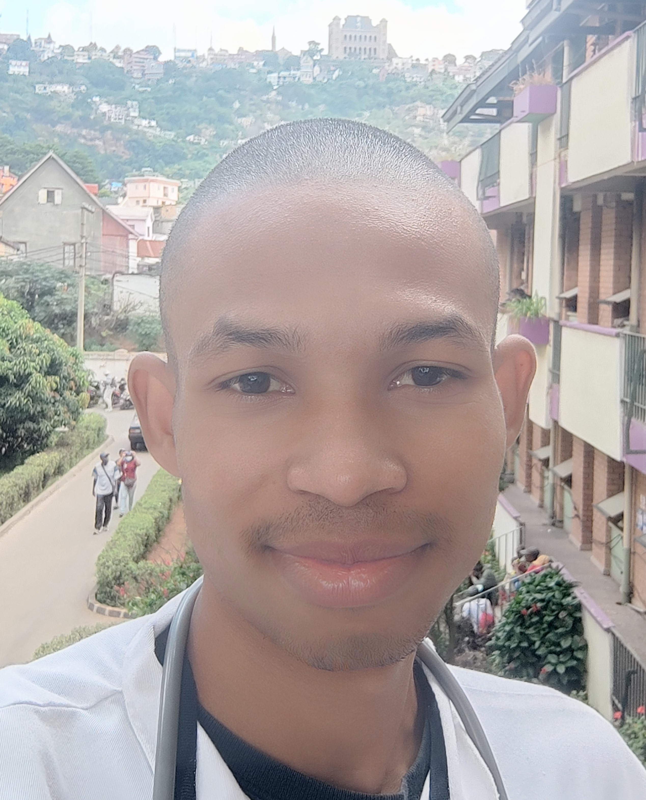

Zico | WWD 130
Hello everyone ! My name is Zico, I am from Madagascar and I live in Antananarivo to study but I come from the East Border of Madagascar. I am the third year of medical school and I really like computer science. When I was little boy, I was dreaming to be an astronaut and engineer. Since I was little boy, I have dreamt to be a man to many things that's why I whant to learn many things to make true. Sometimes, when I learn new thing that I realize that nothing is easy but as push trough it, we will get the result according to it even it is not on the time we need it ut I know the effort is not for nothing. The time I decided to take this course is the biggest decision that I make this year because I am going to learn something that is very different from my academic study but I know that I may need them to be cvombined latter to develop my carrer.